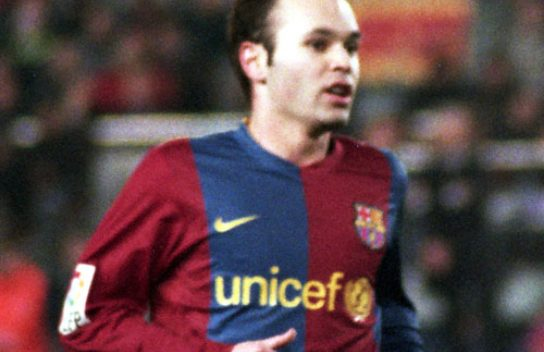

개인기 락커룸 › 볼 컨트롤
라 크로케타
La Croqueta

사진: Darz Mol · CC BY-SA 2.5 es · 잘라서 사용 (이 썸네일도 CC BY-SA 2.5 es) · 원본과 라이선스

공을 한 발 안쪽에서 다른 발 안쪽으로 빠르게 옮겨 수비수 두 명 사이를 빠져나가는 이니에스타의 기술.
따라하는 순서
- 수비수가 발을 뻗는 순간을 기다린다
- 오른발 안쪽으로 공을 왼발 쪽으로 짧게 민다
- 왼발 안쪽으로 바로 받아 앞으로 밀고 나간다
실전 팁
공을 옆으로 옮기는 거리는 한 뼘이면 충분해요. 크면 오히려 뺏겨요.
실제 사용 사례
- 1990년대 바르셀로나미카엘 라우드루프 — 라 크로케타를 즐겨 쓴 원조격 선수
- 바르셀로나·스페인 대표팀안드레스 이니에스타 — 중원에서 두 수비수 사이를 빠져나갈 때 반복해서 사용 장면 영상
따라하기 영상
능력치
| 속임수 | 3 / 5 |
|---|---|
| 스피드 | 5 / 5 |
| 화려함 | 2 / 5 |
| 실전성 | 5 / 5 |